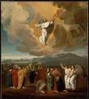

En el Principio Era el Verbo

¿Un Chapoteo Grande?
Cada diciembre, empezamos a anticipar la celebración más grande del año: ¡Navidad! Todas las tiendas y muchas de las casas están radiante con luces y oropel, e incluso las calles de muchas ciudades brillan con luces titilantes en torno a muchos de los edificios. ¿Y la emoción más grande de todos? ¡Regalos! ¿Qué vamos a recibir? ¿Será lo que hemos estado esperando? ¡Nosotros simplemente no podemos esperar a 25 de diciembre!

Una Entrada Muy Reservada
¿Entonces, cómo es que sucedió hace 2000 años? ¿Eran personas esperando expectante: tienen sus casas decoradas en la anticipación del nacimiento de Jesucristo? ¿Se compraron regalos para los demás para la celebración de este tan esperado nacimiento? ¿Cuando nació, hizo un anuncio de ir por todo el mundo que el Salvador había llegado a la última?
Al contrario.

Cuando Jesucristo nació en Belén, también llamada la Ciudad de David (¿recuerdas?), sólo un puñado de personas que eran realmente conscientes de ello. Hubo María, la madre de Jesucristo, y José, su prometido. Las personas que la estable la propiedad de la posada donde María y José estaban se encontraban probablemente consciente de que la mujer había dado a luz, pero no tenía especial importancia para ellos.
Pero hubo gran alegría en el cielo, sabemos, porque Lucas 2:8-14 nos dice que un gran grupo de ángeles aparecieron a unos pastores en la noche del nacimiento de Jesucristo. Ellos no sólo anunció que un niño llamado Jesucristo había nacido, pero que en realidad se proclamó ¡que Él era el Mesías que el pueblo Judío había estado esperando durante tanto tiempo!
Pero serían otros treinta años antes el resto del mundo se comenzarían a descubrirían eso.
Cuatro Hombres, Cuatro Historias

En los años siguientes de la muerte, resurrección y ascensión al cielo de Jesucristo, cuatro hombres se inspiraron para escribir sobre la vida de Él. Los primeros cuatro libros del Nuevo Testamento son nombrados para los hombres que escribieron estas biografías (generalmente son llamados Evangelios): Mateo, Marcos, Lucas y Juan.
Ellos no discutir con los demás; es probable que ellos no sabían que alguien más estaba escribiendo la historia de Jesucristo. Mateo, Lucas y Juan casi con toda seguridad habían leédo el Evangelio de Marcos; los estudiosos creen que fue la primera biografía de Jesús a ser escrito. Pero los cuatro evangelios fueron escritos de forma independiente el uno del otro.

Cuando la gente le cuente una historia sobre un evento, por lo general tratan de incluir lo que, en sus opiniónes son las partes más importantes. Este fue el caso de Mateo, Marcos, Lucas y Juan. Algunos incluyen acontecimientos y historias que otros no; algunos eventos se registran en un orden ligeramente diferente.
Por ejemplo, sólo Mateo y Lucas cuentan la historia del nacimiento de Jesús. Tal vez, en la mente de Lucas, fue importante que la gente sepa que Jesús nació de una virgen. José, el novio de María, no era el padre de Jesucristo; Jesucristo era el Hijo de Dios (Lucas 1:26-38).
El evangelio de Mateo comienza con el lineaje de Jesucristo. ¿Te acuerdas de cómo, en aquel lejano tiempo, Dios prometió a Abraham que el mundo sería bendecido a través de un rey que vendría de sus descendientes (Génesis 12:3)? Mateo se encarga de mostrar que Jesucristo era un descendiente directo del Rey David, quien era un descendiente directo de Abraham. Jesucristo era el cumplimiento de esa antigua profecía.
En el caso de Marcos y Juan, que parecen dar por sentado que, cuando estaban escribiendo acerca de Jesús, todo el mundo sabiendo quien estaban hablando de: En Su día, Jesús estaba muy, muy famoso. Así, Marcos y Juan comienzan sus historias de Jesucristo en el momento en que comenzó su ministerio terrenal, es decir, cuando Él tenía unos treinta años.
Un Mesías Inesperadas

Cuando nos enteramos de los profetas que predijo que Israel caería a Asiria y Babilonia, también aprendimos que esos mismos profetas se predice que un rey vendría de que salía de la línea del Rey David. Estas profecías los Judios dio la esperanza de que Israel volviera a convertirse en una gran nación, que un rey vendría a conquistar todos los enemigos de Israel y convertirlo en una superpotencia que dominaría el mundo.
Pero no fueron los Judios lectura todas las profecías; o, si lo fueran, ellos no entendieron muchos de ellos. Los profetas dio DOS descripciones del Mesías que enviaría Dios. Uno de ellos sería, en efecto, ser un Gobernante poderoso. Lo que los Judios no entendía era que el rey vendría de un lugar más humilde (Belén, recuerdas?), que Él no quiso venir con bombos y platillos (¿Recuerdas la noche tranquila en Belén pequeña oscura?), y que sería un hombre que conoce dolor y pena, no gloria y el poder real.
Como derrotado, desmoralizado gente, los Judios no estaban buscando un Mesías que fue un humilde persona como Jesucristo; que estaban buscando a alguien mucho más espectacular que la que.
Y así, cuando Jesucristo vino y vivió entre ellos, no lo reconocieron al Mesías cuando le vieron.

La Enseñanza de Jesucristo
Recuerda que Jesucristo se crió en un lugar que estaba bajo el dominio de otro país: cuando Él vivió, fue el poderoso Imperio Romano. Jesucristo creció en una sociedad muy simple; el pueblo Judío era muy devota, y sus vecinos eran agricultores o pescadores o comerciantes (José, el esposo de Su madre, era un carpintero de oficio).
Tal vez por esto, Jesucristo trató de enseñar las verdades espirituales por contar historias, llamadas parábolas, que a menudo sobre cosas que las personas en Su sociedad hubiera conocer y comprender:

- un agricultor siembra semillas en su campo (Mateo 13:2-23)
- un hijo que se rebela a sus padres, pero vuelve a ellos con gran remordimiento por su pecados (Lucas 15:11-32)
- un pastor que pierde una de sus ovejas (Mateo 18: 10-14)
Los Fariseos
En el momento en que vivió Jesucristo, los sacerdotes (que la Biblia llama ellos los fariseos−−una palabra que significa "los separados") gobernaron la vida cotidiana de los Judios. Los sacerdotes provenían de una de las doce tribus de Israel que Dios había escogido específicamente para que el papel de: los Levitas (de la tribu de Levi). Ellos consideraban que era su trabajo para para evitar que los Judios de caer en el pecado como lo habían hecho en el pasado. Fue sus trabajo, o así lo creían, a leer e interpretar la Biblia para el pueblo. (¿Recuerda lo que dijimos antes acerca de la intención de Dios que la Biblia es para todos?)
Jesucristo no era de la tribu de Leví, de modo que Él no era un sacerdote.
Para ser un rabino o un maestro, un hombre tenía que pasar por un largo período de formación en una escuela rabínica especial.
Jesucristo no había ido a la escuela rabínica, y así lo los fariseos no lo considíeran Él como "calificado" para ser un maestro.
Así, casi desde el comienzo de su ministerio, Jesucristo estaba en desacuerdo con los dirigentes religiosos. Multitudes de personas se reunieron para escuchar a Jesucristo a enseñar. En una de sus series más famosas de las enseñanzas, llamado el Sermón de la Montaña (que se puede encontrar en Mateo 5 y Lucas 6), prácticamente todos los puntos que Él hizo iba en contra de lo que los fariseos tendría la gente creer.

Algunas de las ideas principales que Jesucristo quería que sus seguidores a aprender son:
- Dios ama a la gente y quiere que gente le ame a É. Una manera de mostrar nuestro amor a Dios es obedecer no sólo la letra de la ley, pero el espíritu también.
- Jesucristo quiere que Sus seguidores a ser conocido por Sus amor: el amor a sus hermanos en la fe, y el amor incluso para sus enemigos. Dios ha ofrecido a perdonarnos de nuestros pecados; Él quiere que perdonarnos unos a otros.
La Cosa Más Importante
La cosa más importante que Jesucristo quería que sus seguidores a que sabía era que Él, Jesucristo, era el Hijo de Dios, y que la salvación del pecado viene solamente a través de Él. Uno de los versos más famosos de la Biblia es Juan 3:16:
Porque de tal manera amo Dios al mundo, que ha dado a Su Hijo unigenito, para que todo aquel que en Él cree, no se pierda, mas tenga vida eterna.
Esta declaración de Jesús era revolucionario por dos razones: en primer lugar, la idea de que Jesús era el Hijo de Dios era inaceptable para muchos Judios. ¿Cómo podría un simple hombre ser Dios? La segunda idea que los líderes religiosos en la época de Jesús no podía aceptar era que la salvación no estaba reservado sólo para los Judios. Jesús dijo que TODO aquel que en Él cree, pueden pertenecer al Reino de Dios. (Juan 1:12)
Los Saduceos
Un otro grupo de Judios que vivió en la época de Jesucristo se llamaba a los Saduceos. Estos fueron importantes, a menudo ricos, los hombres que habían hecho una especie de arreglo político con los Romanos, por lo que gozaron de una cierta cantidad de poder político. Los Saduceos a veces dio a la tarea de recaudación impuestos para los Romanos de sus propios compañeros Judios, y eran a menudo deshonesto, requierón más de lo que la gente les debía, para que pudieran mantener una cuota para ellos mismos.
Ellos eran considerados traidores por muchos de los Judíos a causa de sus estrechos vínculos con los Romanos odiados. La rebelión era en la mente de muchos Judios en la época de Jesucristo; se irritaron por la dureza de la dominación Romana.
Los Saduceos consideraban que era sus trabajo para mantener la paz entre los Judios y los Romanos. Cuanto menos problemas los Judios hecho para los Romanos, por lo que los Saduceos pensamiento, el más fácil sería para todos.

El Problema Con Jesucristo
Como vimos antes, Jesucristo fue enseñanza de las multitudes de personas las buenas noticias acerca de Dios y Su amor. Los Fariseos no les gustaba que en absoluto; querían ser la única autoridad religiosa entre los Judios. Jesucristo le enseñó a la gente a pensar más profundamente acerca de los asuntos espirituales que los sacerdotes habían hecho, y la gente lo quería para Él.

Los Saduceos no le gustó a las multitudes que Jesucristo era atraer, ya sea. Una multitud de personas no pueden ser fácilmente controlados. Si Jesucristo quería que la multitud a su alrededor para que le sigan en una rebelión contra Roma, ¿qué podían hacer para evitarlo?
Los Saduceos sabía que incluso una gran multitud de Judios no era rival para el poder del ejército Romano. Si los Romanos tuvieron que sofocar una rebelión Judía, ellos aplaste por completo (y de unos 35 años después de la vida de Jesucristo, eso es exactamente lo que hicieron). Sus poder político no significaría nada con los Romanos ya, y ¡los Saduceos no estaban a punto de perder sus poder a un don nadie como Jesucristo!

Lo peor que Jesucristo hizo, sin embargo, fue la de proclamar a la gente que Él era realmente el Hijo de Dios. Jesucristo les dijo que Él era el Mesías que había estado esperando durante tanto tiempo. ¡Para los Fariseos, esta era una blasfemia (la falta de respeto hacia todo lo posible para Dios)! Bajo la ley Judía, era un crimen punible con la muerte.
Una y otra vez, Jesucristo hacía señales y milagros para respaldar Su reclamo de ser el Mesías: Él sanó a los enfermos, hizo que gente ciegas viera y los cojos caminar de nuevo. ¡Incluso se había planteado un hombre de entre los muertos!
Jesucristo fue percibido como una amenaza tanto a los Fariseos (porque estaba causando que la gente dude de sus autoridad) y los Saduceos (porque podría ser una amenaza para su poder).
Los Fariseos y los Saduceos no eran normalmente buenas amistades y no cooperar uno con el otro, pero ahora tenían un enemigo común: Jesucristo.

Una noche, cuando Jesucristo estaba orando, Judas Iscariot, un hombre que había estado en el más cercano grupo de amigos de Jesucristo, llevó a un grupo de fariseos y saduceos a donde sabía que Jesucristo le gustaba orar, el Jardín de Getsemaní. Jesucristo no resistió a ser detenido, aunque Él sabía que había cometido ningún delito.
Los acusadores de Jesucristo lo llevaron a Caifás, el sumo sacerdote del templo, para llevar a cabo un juicio secreto. Caifás le dijeron que Jesucristo era culpable de blasfemia a causa de Su afirmación de ser el Mesías, el Hijo de Dios.

Mientras estaba de pie ante el Sumo Sacerdote, Jesucristo dijo, "Yo soy el Mesías, y me veréis sentado a la diestra de Dios." (Marcos 14:62)
A pesar de los falsos testigos que se habían reunido para dar "testimonio" contra Jesucristo, Caifás decidió que esta declaración de Jesucristo era una confesión de culpabilidad. Su veredicto fue que Jesucristo debía ser condenado a muerte.
Los Judios no podía llevar a cabo la pena capital sin la autorización del gobernador romano, Pilato. Los sacerdotes llevaron a Jesucristo ante Pilato y le dijo que Jesucristo había cometido traición: si Él decía ser el Mesías, según decían, que era lo mismo que decir que Él era el Rey de los Judios. Bajo la ley romana, nadie podía llamarse a sí mismo un rey excepto el César.
Pilato realmente no creen que Jesucristo fue haciendo una afirmación muy seria para ser rey porque Él ni siquiera ofrecer una defensa para sí mismo mientras estaba siendo juzgado. Pero los sacerdotes Judíos insistían en que Jesucristo sea condenado a muerte. Aun cuando Pilato les ofreció la opción de tener un asesino convicto, Barrabás, liberado, o tener a Jesucristo en libertad, el pueblo gritaba a todos que Jesucristo se le debe condenado a muerte. (Marcos 15:6-13)

Jesucristo Muere y Se Resucita
La crucifixión era una forma de pena capital utilizados por los romanos. Era una forma más vergonzosa de morir. Aunque Jesucristo es comúnmente representado en las pinturas que llevaba un taparrabos, era en realidad despojado de su ropa, por lo que estaba desnudo para que todos lo vieran. Fue especialmente vergonzoso porque la crucifixión era reservada por los Romanos para los peores tipos de criminales.
Después de una noche de ser golpeadas, en primer lugar por Sus acusadores, los Judíos, y luego por los guardias Romanos, se hizo a Jesucristo cargar Su propia cruz hasta el lugar donde iba a ser crucificado. Estaba tan débil de todos sus golpes que Él no podía soportar el peso de la cruz; un esclavo que pasaba por el camino se le hizo ayudar llevar la cruz de Jesucristo por Él.
Cuando llegaron al lugar de la crucifixión, los guardias romanos clavaron las manos y los pies de Jesucristo a la cruz. Los soldados romanos que custodiaban Él apostó por la ropa que habían tomado de Jesucristo.
Aunque por lo general tomó varios días de intenso sufrimiento para morir en la cruz, las heridas de Jesucristo y de Su pérdida de sangre de la noche anterior, probablemente aceleró Su muerte. Él murió el mismo día en que fue clavado a la cruz.

Aunque la mayoría de los amigos de Jesucristo le había abandonado cuando fue arrestado en el Huerto de Getsemaní, había un hombre llamado José de Arimatea, que tuvo el valor de ir a Pilato y pedir el cuerpo de Jesucristo para que pudiera ser enterrado adecuadamente.
Se envolvió el cuerpo de Jesús en lino y lo puso en una tumba que había sido tallada en la roca. Hizo rodar una piedra grande sobre la entrada y se fue.
Jesucristo había tratado de decir a Sus discípulos muchas veces que Él tendría que morir como el sacrificio final por los pecados de la humanidad, pero ellos nunca lo habían entendido. Si Jesucristo era el Hijo de Dios, razonaron, si Él era el Mesías prometido de Dios, ¿cómo pudo morir?
En el tercer día después de que Jesucristo murió, algunas de las mujeres que habían sido Sus amigas fueron a la tumba donde fue sepultado. Era la costumbre Judía de ungir a un organismo con ciertas especias para el entierro. A medida que se iban, se preguntaban entre sí cómo se volvería a mover la piedra que había rodado delante de la tumba.

Cuando las mujeres llegaron, se sorprendieron al encontrar que la piedra había sido removida y ¡que la tumba estaba vacía!
Un ángel, que estaba sentado en el suelo, donde el cuerpo de Jesucristo había estado, les dijo, "¡No tengáis miedo! Jesucristo ha resucitado de los muertos, tal como dijo que lo haría!" El ángel le dijo a las mujeres que se regresar a sus amigos y les contaron la gran noticia de que Jesucristo había resucitado de los muertos. (Marcos 16:6-7)
Así como los Judios celebrar la Pascua de cada año para conmemorar su liberación de la esclavitud en Egipto, los Cristianos celebran el domingo de Pascua como el acontecimiento más glorioso de la historia: Jesucristo había resucitado de entre los muertos, la conquista del poder de la muerte sobre la humanidad y ofrecer el perdón de nuestros pecados de todos los tiempos!
Naturalmente, los amigos de Jesucristo no lo podía creer cuando se enteraron de que Jesucristo no estaba en Su tumba.
Pero Jesucristo se apareció a los once discípulos a varias veces después de Su resurrección. Pasó una gran cantidad de tiempo hablando con ellos acerca de cómo Él había sido el cumplimiento de muchas profecías, y sus ojos fueron finalmente abierta a todas las verdades que Jesucristo había tratado de decirles que antes de Su crucifixión. (Lucas 24:27)
Jesucristo Sube al Cielo
Jesucristo continuó apareciendo a los discípulos durante un período de cuarenta días después de Su resurrección. Una vez, durante una comida que compartía con ellos, les dijo Sus apostoles que no salieran de Jerusalén hasta que había recibido el don del Espíritu Santo. (Juan 14:16)
En la última ocasión, cuando Jesucristo se les apareció a los discípulos, le preguntaron si ahora iba a restaurar a Israel a su antigua gloria. Jesucristo les respondió que sólo Dios el Padre tiene que saber la respuesta a ese tipo de pregunta. (Hechos 1:7)
Y como todos ellos se quedó allí con Él, Jesucristo comenzó a subir en el cielo, arriba y lejos de ellos. Los discípulos se miró y miró, hasta que ellos no podían ver a Jesús mas. Jesucristo había ascendido al cielo para estar con Su Padre, pero la historia no termina ahí. ¡De hecho, fue sólo el comienzo!